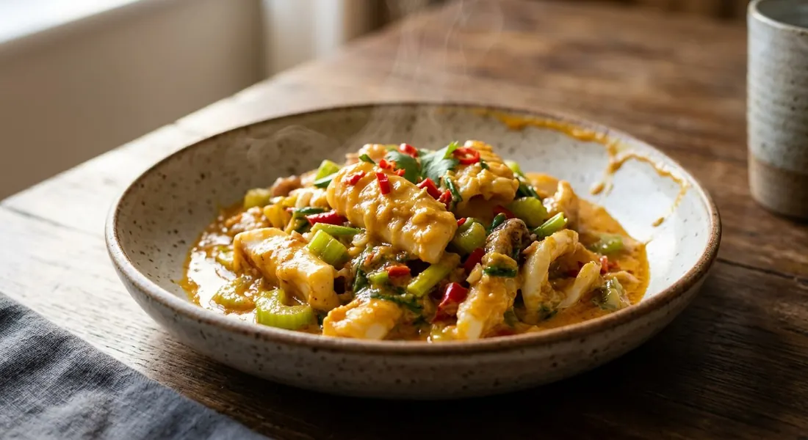

Squid rings slicked in a golden sauce of salted duck egg yolks and roasted chilli jam, finished with Chinese celery and spring onion — the stir-fry that emptied rice bowls across Thailand in the mid-2000s.

ปลาหมึกผัดไข่เค็ม is not an old recipe. Pim of ครัวบ้านพิม — whose blog recipe dates back to the craze itself — remembers that around 2004–2005 the dish was suddenly the showpiece of every restaurant in Bangkok, and that nobody could say who invented it. She chased it to a small restaurant on Charoen Krung Road, where the cook was happy to list the ingredients and sensibly unwilling to give quantities. She spent weeks at home until her version matched the memory.
The dish's whole trick is the sauce, and every source agrees on its bones: salted duck egg yolks mashed loose with water and น้ำพริกเผา, the sweet roasted chilli jam, then seasoned with oyster sauce, light soy and a little sugar. Wongnai's editorial recipe calls the dish deceptively simple — make the sauce, fry the squid in it, toss in the greens. AroiFin adds the technique the others only imply: start on a low flame so the yolks break down into the sauce, then raise the heat for the wok's aroma — and because high heat is what keeps the squid tender rather than rubbery.
The squid is the other half. AroiFin's buying rules for หมึกกล้วย (bigfin squid) are exacting — clear eyes, head and body still attached, flesh that springs back, the membrane intact — because the point of the dish is that bounce against the richness of the yolk. And it must be eaten at once: leave it standing and the squid weeps water into the sauce and the gloss is gone. AroiFin serves it over rice, or better, garlic fried rice.
| Thai | English | Amount |
|---|---|---|
| ปลาหมึก | Squid, cleaned, sliced into rings | 350 g |
| ไข่แดงเค็ม | Salted duck egg yolks | 4 |
| ไข่เค็มหั่นชิ้น | Salted egg, chopped | 1 |
| น้ำเปล่า | Water | 80 ml |
| น้ำพริกเผา | Roasted chilli jam (nam phrik phao) | 1 tbsp |
| ซอสหอยนางรม | Oyster sauce | 2 tbsp |
| ซีอิ๊วขาว | Light soy sauce | 1 tbsp |
| น้ำตาลทราย | Sugar | 2 tsp |
| กระเทียมสับ | Garlic, chopped | 1 tbsp |
| ขึ้นฉ่าย | Chinese celery, cut into lengths | 1 stalk |
| ต้นหอม | Spring onions, cut into lengths | 2 |
| พริกชี้ฟ้าแดง | Red spur chilli, sliced, to garnish | 1 |
| น้ำมันพืช | Vegetable oil, for frying | — |
Pim's dry pot (ครัวบ้านพิม): three big scored squid, one and a half salted yolks, and no water at all — she fries the garlic in plain oil, then fries the yolk paste loosened with น้ำมันน้ำพริกเผา, the chilli-jam oil itself, and says a splash of stock is the fix for anyone who wants it wet. Nickktwf's saucy pot (Wongnai): three whole boiled Lopburi salted eggs — not just the yolks — mashed with chilli-jam oil and paste, oyster sauce and seasoning powder, then reduced to the thickness you like. Kapook's pot: squid blanched first, onion wedges fried with the garlic, jinda chillies for heat, and both light soy and oyster sauce to taste.
Yolks only, or the whole egg. Four of the five sources use salted yolks alone — Wongnai's editorial recipe uses four yolks plus one whole salted egg chopped in for texture. Nickktwf goes all the way: three whole salted eggs, boiled first, then scooped out and mashed — he advertises the recipe as the saucy one, and the whites give the sauce its body.
To blanch or not. Kapook, AroiFin and Pim blanch the squid in boiling water for a few seconds before it meets the sauce, so it cannot overcook in the wok. Both Wongnai recipes stir-fry it raw and let the sauce do the cooking. Both schools insist the squid must leave the heat the moment it is done.
Wet or dry. Pim's pot is deliberately dry — no water at all, the yolk paste loosened only with chilli-jam oil — and she notes a splash of stock is the fix if you want it saucy. Wongnai's editorial version pours in a third of a cup of water, Nickktwf's "สูตรน้ำเยอะ" is wetter still, and AroiFin keeps it to three spoonfuls, just enough to make the sauce coat rather than pool.
The chilli-jam oil. Pim and Nickktwf fry in น้ำมันน้ำพริกเผา — the oil that sits on top of the jam — and treat it as the dish's fat. Wongnai, AroiFin and Kapook use plain vegetable oil and the jam itself. The jam is the one ingredient no version leaves out.
The onion. Kapook, AroiFin and Nickktwf fry onion with the garlic — wedges or diced. Wongnai's editorial recipe and Pim's original leave it out entirely, keeping the dish to squid, egg and greens.
The sugar. Two teaspoons (Wongnai), one (AroiFin and Nickktwf), or Pim's half-teaspoon that she admits she did not use. Nickktwf alone adds a spoon of seasoning powder; everyone else stops at oyster sauce and soy.
This recipe is translated from the following Thai-language sources. Where they disagree, we've said so.
1. Wongnai — "วิธีทำ เมนู 'ปลาหมึกผัดไข่เค็ม' หมึกเหนียวนุ่ม เคล้าไข่เค็มหอมมัน!" (the editorial recipe used here: four yolks plus a chopped whole egg) — wongnai.com
2. AroiFin — "วิธีทำ ปลาหมึกผัดไข่เค็ม หมึกเด้งคลุกซอสไข่เค็มเข้มข้น!" (the technique guide: bigfin squid, buying rules, low-then-high heat, serve immediately) — aroifin.com
3. Kapook Cooking — "ปลาหมึกผัดไข่เค็ม เมนูปลาหมึกสุดอร่อย ท้าให้ลอง" by คุณเนินน้ำ (the blanched-squid version with onion and jinda chillies) — cooking.kapook.com
4. ครัวบ้านพิม (Pim) — "หมึกผัดไข่เค็ม" (the dry original, chilli-jam oil, and the story of the 2004–2005 craze) — pim.in.th
5. Wongnai — "ปลาหมึกผัดไข่เค็ม" by Nickktwf (the saucy whole-egg version with Lopburi salted eggs) — wongnai.com